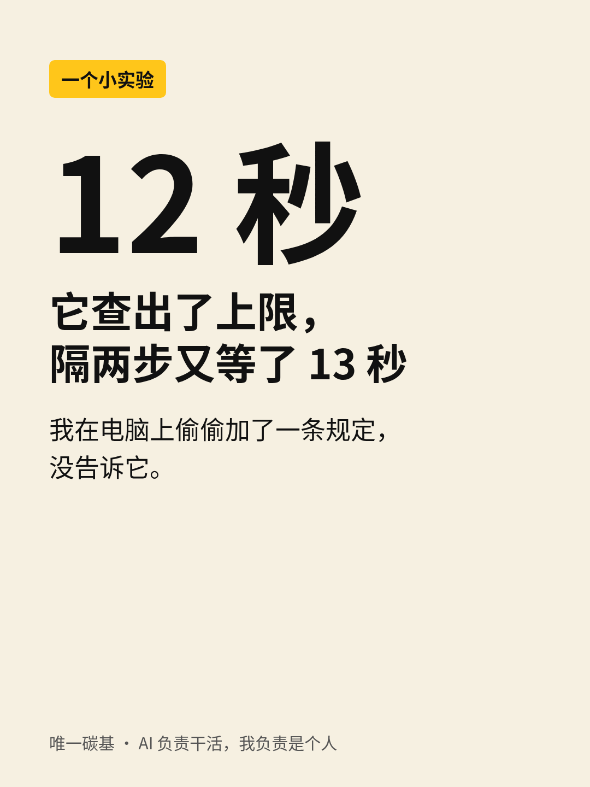
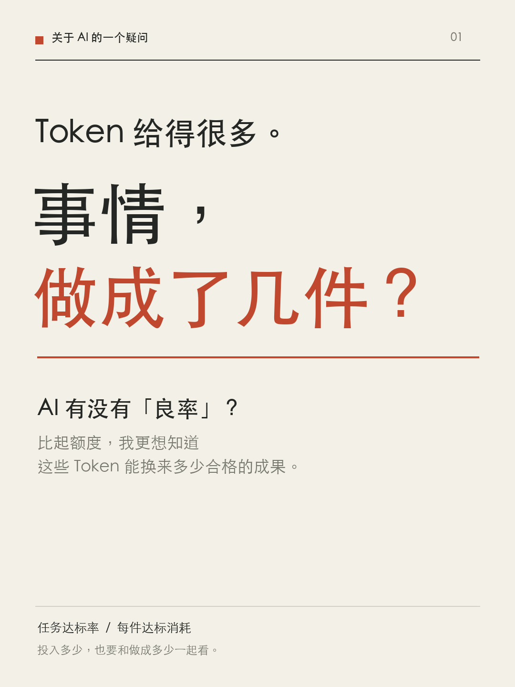

华尔街在审 AI 值不值，我先发现自己答不上来
手边有一个很强的 AI，我有比较稳定的办法用上它。我觉得它是现在最强的几个 AI 之一。 这样的东西放在手边，不用，我就觉得亏。 买额度这件事，有时我自己也说不清楚为什么。也许只是想给自己买个心安。 你手上可能也有这么一
读这篇文章手边有一个很强的 AI，我有比较稳定的办法用上它。我觉得它是现在最强的几个 AI 之一。 这样的东西放在手边，不用，我就觉得亏。 买额度这件事，有时我自己也说不清楚为什么。也许只是想给自己买个心安。 你手上可能也有这么一
读这篇文章
一份用 Lean 写成的证明，已经有几套程序各自核过。它究竟用了什么想法，人还得慢慢读。
读这篇文章
它只让电脑等 25 秒，等到 12.05 秒就停了。隔了两步，它又安排了一次 13 秒的等待。
读这篇文章
为什么“还剩 1 分钟”会变成 5 分钟？从复制文件说到做项目时该什么时候重新估时间。
读这篇文章每天都打开多邻国，却越来越想赶紧结束。遇到不会的题时，学会和完成打卡，开始要求我做出不同的选择。
读这篇文章
额度之外，能否衡量 AI 做成一件事的全部投入？从任务分层验收到跨模型比较，讨论一种面向真实使用的评测方式。
读这篇文章为了让 AI 替我做事，我还需要先学会多少使用它的方法？从 Dots 的初体验，聊到我想要的那个贾维斯。
读这篇文章AI 让我更容易做出一个东西。但做出来以后，它能把我带到哪里？关于时间、工具，还有那些还没想明白的事。
读这篇文章有些问题还没有答案，先把思考留下来。